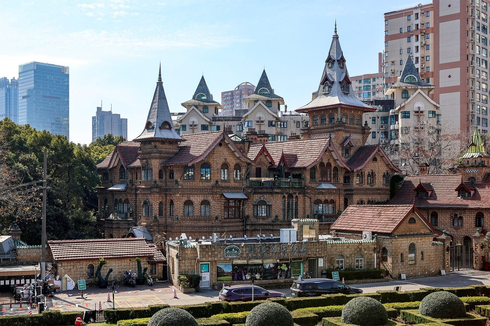

Moller Villa 马勒别墅（马勒住宅，现为上海马勒别墅饭店）
Scandinavian-style mansion, now a hotel · Jing’an
LikelyEntry rule unclear · 18 Nov 2026
From the pavement, see a 1936 castle-shaped mansion. The CNY 108 tour needs three days' notice (Feb 2026).
Entry rule unclear
The evidence for this one has a gap. Check on the day or call ahead.
Why it matters
Eric Moller, a Shanghai shipping and racehorse owner, enlarged an existing house on the site into this castle-shaped villa between 1927 and 1936. A popular legend says its shape came from a daughter's dream; a daughter interviewed in 1992 did not recognise the story. The Mollers left in 1941; it was converted to a hotel in 2001 and listed as a national key heritage site on 25 May 2006.
What to see
From the pavement you see steep roofs and spires and two stone lions at the gate. The garden, about 2,000 m², has a bronze statue of the racehorse Blonic Hill. Inside, the house is laid out like a ship, with split levels, winding stairs and porthole-style windows.
How to get there
Show: 请带我去马勒别墅饭店，陕西南路30号。 Give the road and number, not only the name: OpenStreetMap also lists a film-studio copy, 车墩影视马勒别墅 (Chedun Film Studio Moller Villa), in Songjiang, about 27 km away. Look for the two stone lions at the gate.
Local tip
The contact email, sde@mollervilla.com, is a second way to book the tour. Visitors say the pedestrian overpass at the corner gives the best free view.
Watch out
Casual entry is not guaranteed: no walk-in rule is published, and visitor posts describe guards asking whether you are staying, dining or booked (unconfirmed). The green space at the corner (1,894 m²) was fenced for rebuilding from 20 Jul 2026, with reopening given as late Oct to early Nov or around year-end, so it may still be closed.
What was checked, and what was not
Read on 18 Nov 2026
Sources read 18 Nov 2026: the villa's own site (address, dates, garden; no visiting hours); the Jing'an District Media Centre report (16 Feb 2026) on the tour; the State Council notice of 25 May 2006; The Paper (11 Sep 2026); a Wenhui Daily essay (2022); OpenStreetMap.
Not checked
Whether the CNY 108 tour still runs, runs on Mon 30 Nov or has an English guide; whether a passport is needed.
Sources
- Moller Villa's own site, English history pagemollervilla.com Opens in a new tab
- Moller Villa's own site, home pagemollervilla.com Opens in a new tab
- Moller Villa's own site, contact pagemollervilla.com Opens in a new tab
- Jing'an District Media Centre via Tencent News, 16 Feb 2026 (castle tour, horse statue, ship-like layout)news.qq.com Opens in a new tab
- State Council notice 国发〔2006〕19号, 25 May 2006 (Wikisource copy, item 926)zh.wikisource.org Opens in a new tab
- The Paper via Tencent News, 11 Sep 2026 (green space in front: 1,894 m², works from 20 Jul 2026)news.qq.com Opens in a new tab
- Meet in Shanghai, Moller Villa under national protection (open all day, open to the public)meet-in-shanghai.net Opens in a new tab
- OpenStreetMap: Moller Villa (map position and address)openstreetmap.org Opens in a new tab
- Wenhui Daily essay on the villa's archives (2022)wenhui.whb.cn Opens in a new tab
- Sohu, 21 Feb 2023 (visit essay: overpass view)sohu.com Opens in a new tab
- timeanddate, Shanghai sunrise and sunset, Nov 2026timeanddate.com Opens in a new tab
- Wikipedia (English): South Shaanxi Road station (Lines 1, 10 and 12)en.wikipedia.org Opens in a new tab